Robinhood Mirror | Feature Add Concept
Introducing Public Profiles and Mirror Trading to help young investors build financial expertise and confidence

What is Robinhood?
Robinhood is an online banking financial services platform that aims to provide everyone with access to the financial markets, not just the wealthy.
They helped pioneer and popularize commission-free trading, low minimum account balances, and fractional shares trading.
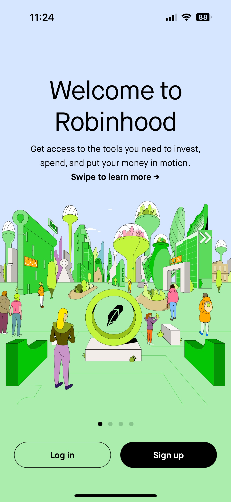
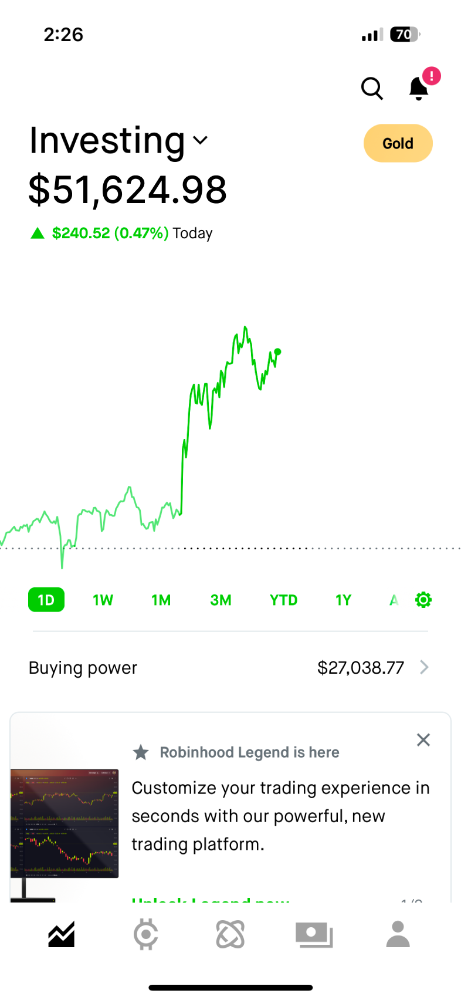
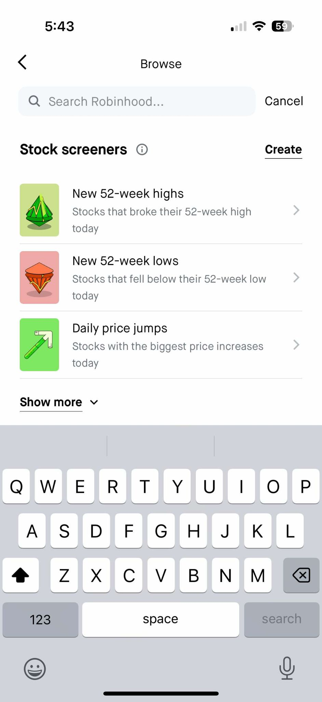
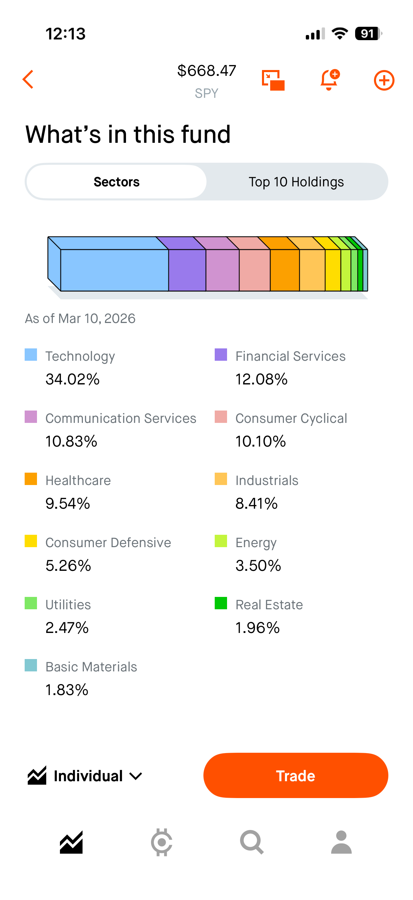
Investors can be bucketed into 3 main categories
Based on interviews from 20 investors of all styles and levels, I grouped them into 3 distinct personas and investing experiences, then uncovered the following problems regarding investing habits and knowledge.
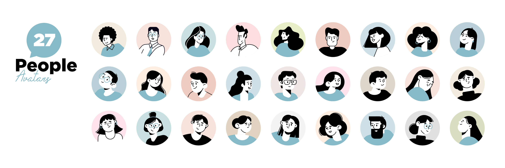
Beginner Investor
0-3 years of experience
Intermediate Investor
3-5 years of experience
Advanced Investor
5+ years of experience
Users struggle to assess the credibility of people they follow online due to lack of transparency, performance history, and trust signals.
Users want to benefit from social insights without sacrificing their privacy or revealing sensitive information.
Beginners lack accessible examples and frameworks for building well-balanced, long-term portfolios.
Trend-chasing and hype-driven trades can mislead inexperienced investors and lead to poor financial outcomes.
Young investors simply lack the financial knowledge to invest properly
Many Robinhood users feel overwhelmed and isolated when making investment decisions. Without mentorship or clear guidance, younger investors, who make up the majority of Robinhood's user base, often rely on informal sources like friends or social media, leading to inconsistent strategies and low confidence.
with over
26.5 million
funded users on the platform, Robinhood has an opportunity to turn isolation into collaboration
Introducing
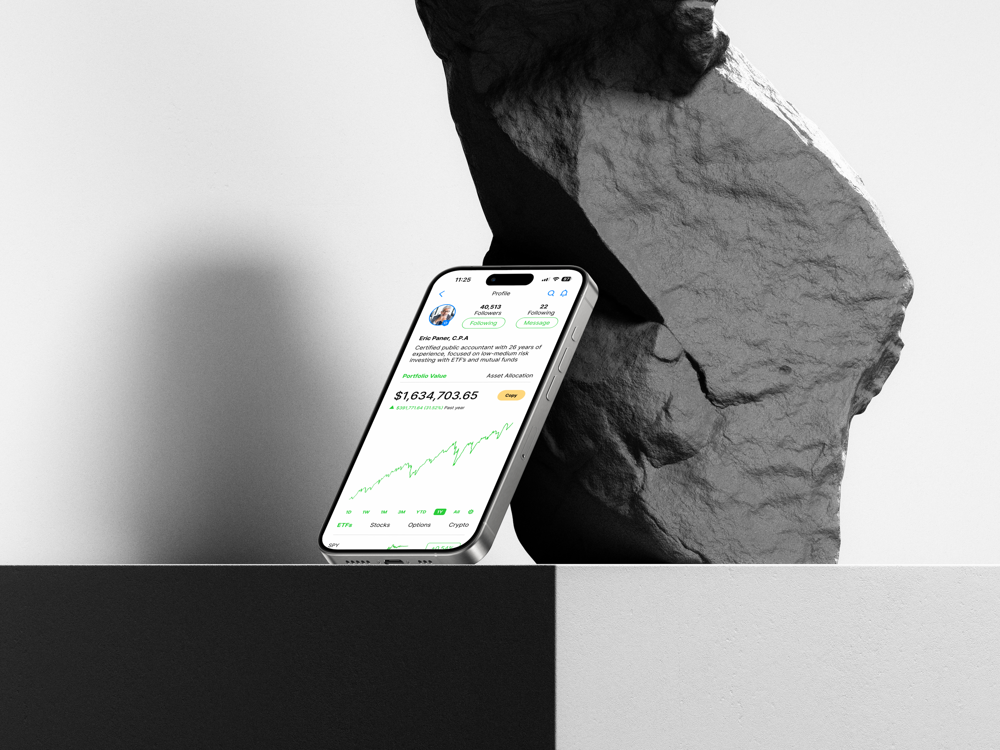
Improved Onboarding Flow
The onboarding flow is designed to personalize the user experience by guiding investors through a series of tailored questions, helping them identify their investing preferences and goals, ensuring a more relevant and engaging platform experience from the start.
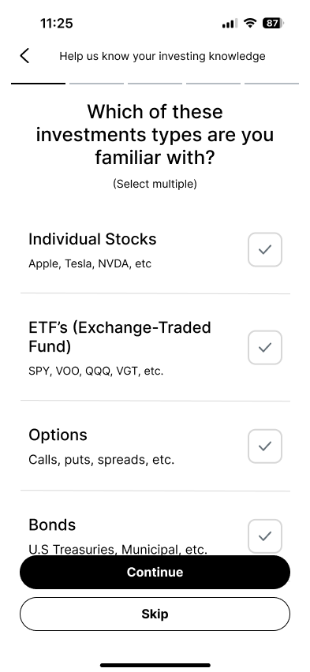
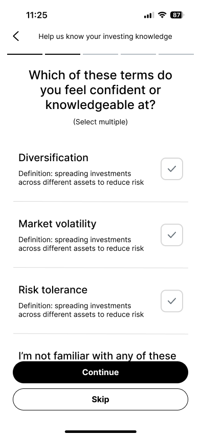
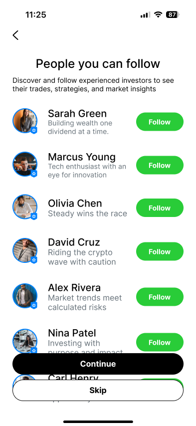
Finding an Investor
The investor discovery feature enables users to find and connect with like-minded investors by categorizing them based on strategies and financial goals, fostering a sense of collaboration and tailored learning.
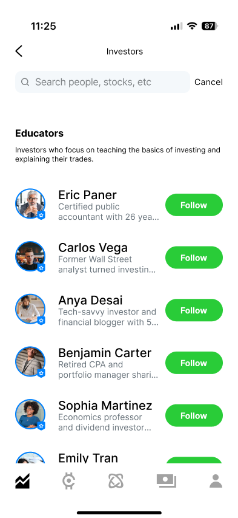
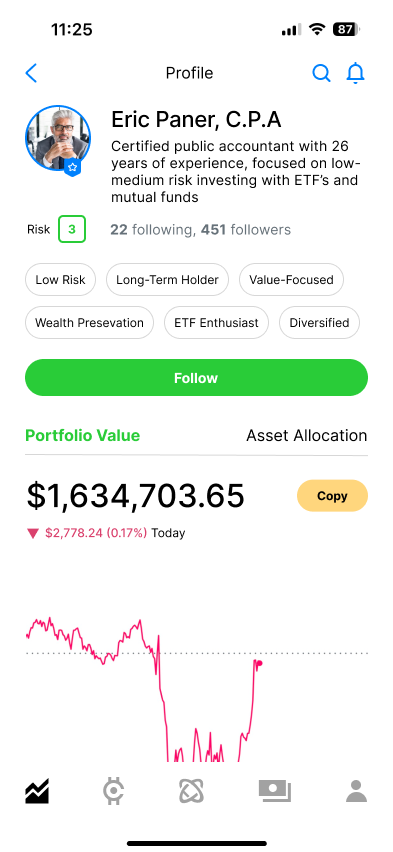
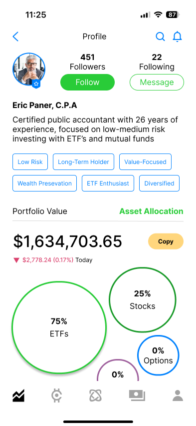
Mirroring an Investor
The Mirroring feature allows users to replicate the trades of other investors, enabling them to align their portfolios with proven strategies while maintaining control over allocation and risk management.
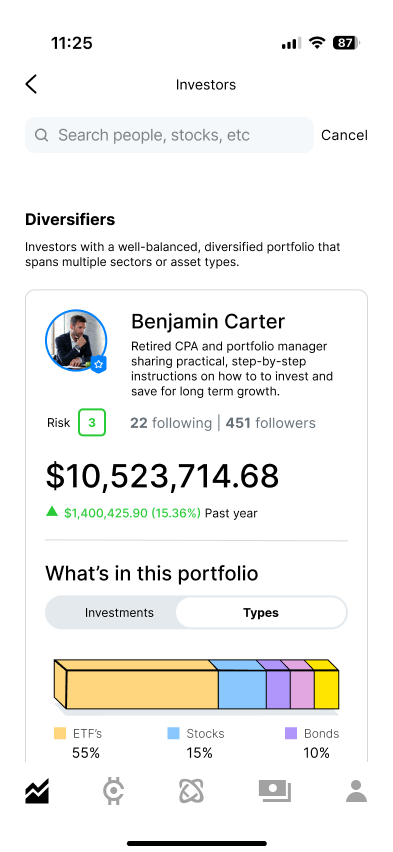
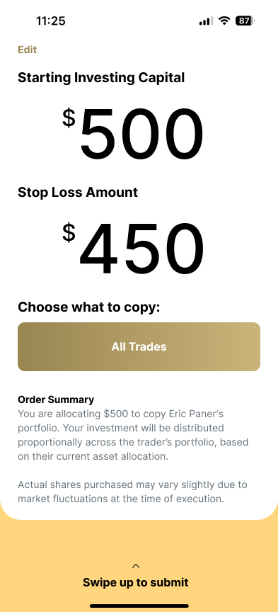
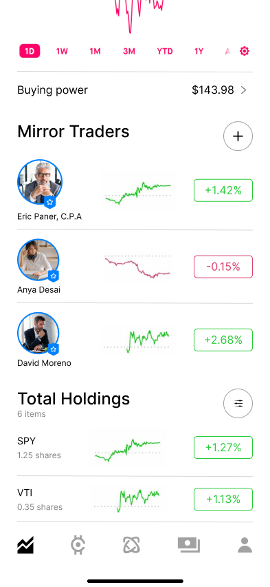
Incomplete Onboarding
If a user skips the onboarding process, Robinhood will display a reminder on the home page, telling the user to complete the onboarding flow.
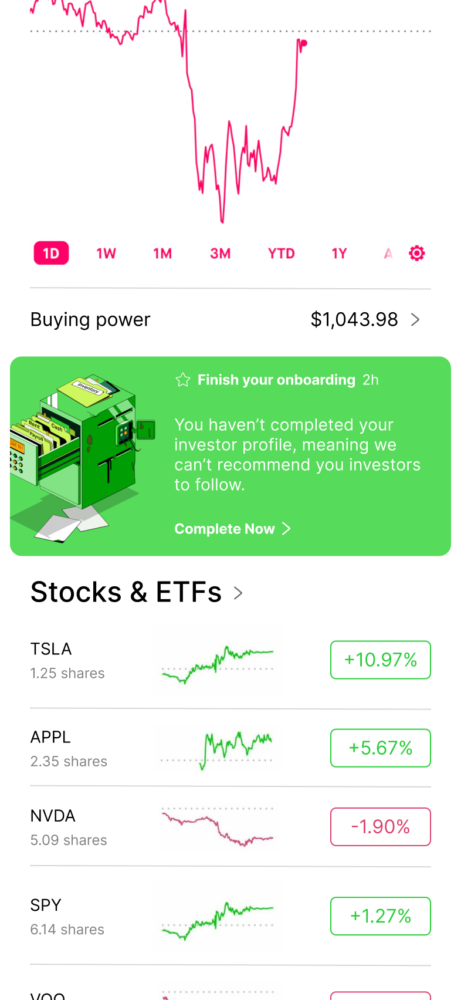
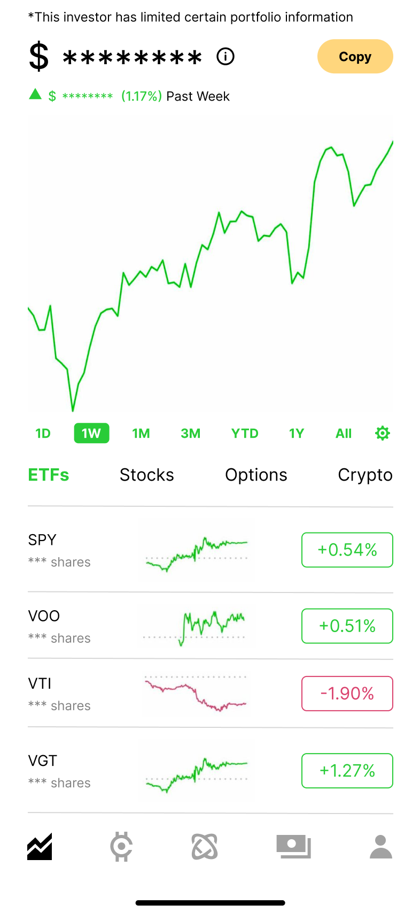
Investor Privacy
All investors can edit what they show to the public, including their: portfolio value, gains/losses, # of shares owned, asset allocation, or their entire profile
Complete Beginner Onboarding
If a user is a complete beginner according to their investing questions, Robinhood will redirect them to the Beginner Resource Hub, separate from the standard onboarding flow
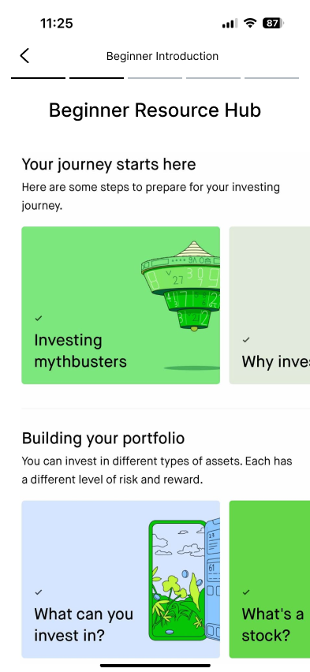
Completion Rate
Percentage of users who complete the onboarding process and receive an investor profile.
Investor Follow Rate
How many users follow an investor after completing onboarding.
Time Spent on Discovery
Tracks engagement with the investor directory and filtering tools.
Adoption Rate
Percentage of users who enable Copy Trading after viewing an investor's profile.
Average Investment Allocation
How much capital users allocate toward mirroring an investor.
Stop-Loss & Risk Settings
Tracks how often users customize risk management options when copying trades.